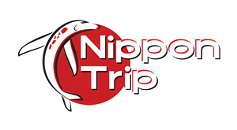

Día 1
Llegada a Japón — Osaka y Dotonbori
Llegada, traslado a Osaka y paseo nocturno por Dotonbori.

Vive Japón con una experiencia cultural, urbana y accesible: Osaka, Kioto, Nara, Kobe, Universal Studios, Tokio, Kamakura y más, acompañado por guía en español.
Reserva con anticipación — los lugares son limitados y se llenan rápido.
¿Buscas otra fecha? Tenemos más fechas disponibles. Consúltanos por WhatsApp y te compartimos todas las opciones.
Asegura tu lugar hoy. Nuestros grupos son reducidos para ofrecerte la mejor experiencia.
No es solo un viaje más, es una experiencia optimizada para que disfrutes Japón sin costos sorpresa.

Si viajas en familia o con amigos, podemos adaptar ciertos detalles del recorrido a los intereses del grupo, sin mezclarlos con tours externos.

Incluida en el paquete, uno de los parques más importantes de Japón.

Experiencia inmersiva digital incluida, uno de los spots más virales de Tokio.

Todo lo importante ya está cubierto, sin cargos sorpresa durante el viaje.
Ideal para viajeros que quieren vivir Japón de forma práctica, con acompañamiento, accesos y traslados principales ya organizados.
Desde CDMX a Japón con escala.
Hostal o alojamiento compartido.
Acompañamiento turístico durante el viaje.
Traslados incluidos según itinerario.
Entradas a sitios mencionados en el itinerario.
Día completo en Universal Studios Japan.
Para estar conectado durante el viaje.
Protección básica para tu experiencia.
Este tour está pensado para quienes quieren conocer los lugares clásicos de Japón, pero con una modalidad más ligera: hospedaje compartido, ambiente viajero y una ruta que combina cultura, ciudad, naturaleza y entretenimiento.

Una ruta pensada para aprovechar lo mejor de Kansai y Tokio, con días culturales, urbanos, históricos y de entretenimiento.
Llegada, traslado a Osaka y paseo nocturno por Dotonbori.
Ciervos sagrados, Todai-ji y los miles de torii rojos de Fushimi Inari.

Templo emblemático, vistas de Kioto y calles tradicionales.

Ciudad portuaria, vistas al mar y ambiente gastronómico.

Recorrido urbano por zonas comerciales y gastronómicas de Osaka.
Día completo en el parque, incluyendo áreas como Super Nintendo World.
Viaje en tren bala hacia Tokio y tiempo libre al llegar.

Senso-ji, barrio tradicional y vistas panorámicas desde Skytree.

Parque Ueno y el paraíso del anime, manga y tecnología.

Moda juvenil, cultura urbana y el famoso cruce de Shibuya.
Templos, calles tradicionales, ambiente costero y el Gran Buda.
Zona futurista de Tokio y experiencia inmersiva en TeamLab.

Tiempo para compras, Ginza, Shinjuku o actividades opcionales.

Traslado al aeropuerto y vuelo de regreso. Fin de servicios.
No es solo venderte un paquete: te ayudamos a vivir Japón con ruta, logística y acompañamiento en español.
Resolvemos dudas sobre pagos, documentación, equipaje, clima y preparación.
Más de 5 años llevando viajeros mexicanos a descubrir Japón y Asia.
Viaja sin pagar todo de golpe. Usa tu tarjeta de crédito y paga hasta en 12 meses sin intereses.
Fotos reales de nuestros grupos viviendo Japón: templos, ciudades, comida, parques y momentos que se quedan para siempre.


Sí, incluye vuelo redondo desde CDMX a Japón con escala.
Esta modalidad es nuestro tour económico para conocer Japón sin pagar un paquete tradicional de hotel, por eso el hospedaje es en hostal o alojamiento compartido.
No incluye alimentos, excepto la cena de bienvenida.
Sí, el itinerario contempla día completo en Universal Studios Japan.
Sí, pregunta por opciones de pago de hasta 12 meses sin intereses.
Sí, si prefieres hospedarte en hotel en lugar de hostal, podemos hacer el cambio por una tarifa adicional. Contáctanos por WhatsApp y te cotizamos el upgrade según las fechas y ciudades de tu viaje.
Alimentos no mencionados en el itinerario, gastos personales, equipaje extra, actividades opcionales, trámites personales (visa, pasaporte) y cualquier servicio no especificado en el itinerario.
Escríbenos por WhatsApp y te compartimos fechas disponibles, formas de pago y detalles completos del paquete.